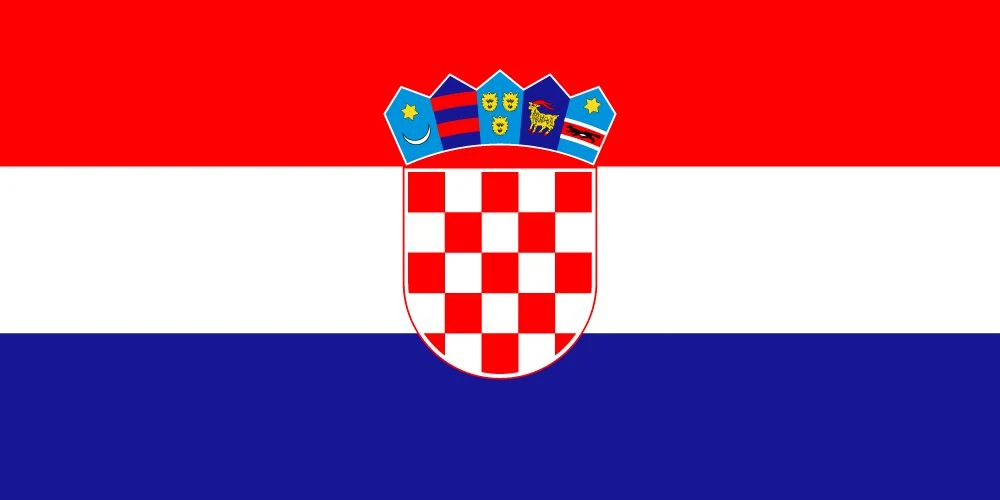
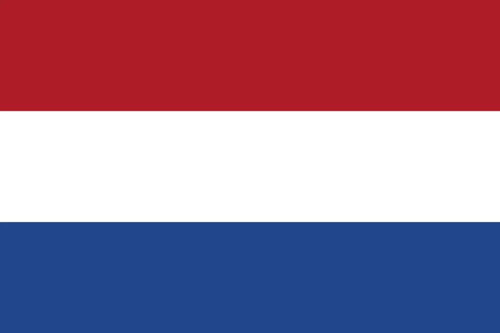

1. Zidane’s Final Glory: The Night France Conquered the World
Saint-Denis, July 12, 1998 – The air was electric. The stage was set. The World Cup final between the host nation, France, and Brazil, the defending champions, was about to unfold at the Stade de France in front of 80,000 spectators. This was a moment France had been dreaming of, but there was one player who stood poised to write his name into history: Zinedine Zidane. The 26-year-old midfielder, known for his cool demeanor and genius on the ball, had been the quiet architect behind France’s stunning World Cup run. But tonight, in front of his home crowd, it was his time to shine.
As the first half kicked off, it didn’t take long for Zidane to stamp his authority on the game. In the 27th minute, with the pressure mounting, Emmanuel Petit floated in a corner. Zidane, who had made a habit of coming alive at the most critical moments, rose above Brazil’s Roberto Carlos and powered a header past Cláudio Taffarel. The stadium erupted. France were 1-0 up, and Zidane had made the opening move in a game that would go down as one of the most memorable in World Cup history.
But Zidane wasn’t finished. Just before halftime, as the clock ticked toward the 45-minute mark, another corner came in. This time, it was from the left. Zidane, relentless in his pursuit of glory, met the ball with a perfectly timed leap and headed it once again past the Brazilian keeper. It was 2-0. Brazil, the five-time World Cup winners, looked shell-shocked, unable to break down France’s well-organized defense. The host nation’s players and fans alike could taste victory now.
The second half, however, was far from a formality. Brazil, stung by the early blows, came out with more intensity, desperate to get back into the game. Ronaldo, their star striker, was struggling to find his usual spark. Rivaldo, a maestro in his own right, tried to pull the strings, but France’s defense, led by captain Didier Deschamps, Lilian Thuram, and the impenetrable Marcel Desailly, was resolute. Brazil pushed, but they couldn’t break through.
As if the night’s drama wasn’t enough, things took another twist when Desailly was shown a red card in the 63rd minute, leaving France with only 10 men. But rather than buckle under the pressure, the French defense stood even taller. Goalkeeper Fabien Barthez made a string of crucial saves, keeping Brazil at bay. Every time the ball came near his goal, he was there, a wall of determination.
Then, as the final whistle loomed, France sealed their fate. In the dying seconds of stoppage time, Petit picked up the ball on the counterattack, fed it to Patrick Vieira, who then slotted the ball through to an onrushing Petit. The French midfielder coolly slotted home to make it 3-0. The Stade de France exploded in ecstasy as the whistle blew. France had done it – they were world champions for the first time in their history.
Zidane, who had scored two of the most important goals in French football history, was the undisputed hero of the night. But the victory was a collective effort. France’s defense had been solid, and the midfield, marshaled by Zidane and Deschamps, was immaculate. Brazil, for all their flair and attacking talent, had been outclassed.
As fans poured into the streets of Saint-Denis and Paris, chants of “Zizou! Zizou!” rang out across the city. The mood was jubilant, ecstatic. France had lifted their first-ever World Cup trophy, and Zidane had cemented his legacy as one of the greatest players to ever grace the game. The man of the match could have been anyone on that field, but it was Zidane’s two towering headers that would forever define this victory.
Coach Aimé Jacquet, who had always trusted in Zidane’s genius, hailed him as “the soul of this team,” and it was hard to argue. Zidane’s influence on the field, his calmness under pressure, and his ability to deliver in the biggest moments made him the player who stood above the rest. Brazil’s manager, Mário Zagallo, was gracious in defeat, admitting, “Zidane killed us tonight.” For the Brazilian team, the defeat was hard to swallow, but Zidane’s brilliance couldn’t be denied.
In the aftermath, the streets of Paris were filled with celebrations. The Eiffel Tower glittered in the night sky, and the French tricolore waved proudly in every corner of the capital. For France, this was more than just a football win; it was a moment of national unity, a triumph of a team that had played with passion, discipline, and heart. Brazil, despite their incredible tournament run, had been swept aside. The tale of this final, with Zidane’s magic as its centerpiece, would be retold for generations to come.
Pelé, watching from afar, described Zidane as “a magician,” and the praise was well-earned. France’s victory wasn’t just a dream realized; it was a new chapter in footballing history, written by the quiet genius who had made it all possible. For Zidane, this night at the Stade de France would forever be the pinnacle of his illustrious career. A first star on the French jersey, a nation united, and Zidane at the heart of it all—this was the defining story of France 1998.

2. Ronaldo’s Final Mystery: The Silent Heartbreak of Brazil
Saint-Denis, July 12, 1998 – The night was supposed to belong to him. Ronaldo, Brazil’s golden boy, had been the driving force behind his team’s run to the World Cup final, scoring six goals and dazzling fans with his raw power and finesse. Brazil had come into the final against France as favorites, and Ronaldo, at just 21 years old, was on the brink of solidifying his status as one of the best players in the world. But in the build-up to the match, chaos struck.
Hours before the final, rumors began to swirl. Ronaldo, who had been Brazil’s shining star throughout the tournament, had suffered a seizure and was rushed to the hospital. His absence from the team sheet caused panic among fans and pundits alike. But just as suddenly, he was back, and the mystery only deepened. Ronaldo started the match, but something was clearly off. He was not the same player who had torn through defenses throughout the tournament.
As the game unfolded, it quickly became evident that this was not the Ronaldo that Brazil knew. Despite having a full-strength squad, Brazil found themselves down 2-0 at halftime, courtesy of two headers from France’s Zinedine Zidane. Ronaldo, normally a constant threat in front of goal, was a ghost. He was being shut down by France’s defense, led by the commanding presence of Marcel Desailly and Lilian Thuram. The Brazilian superstar, who had delivered time and time again in the tournament, was missing.
The second half brought little relief for Brazil. Desailly was sent off in the 63rd minute, leaving France with just 10 men, and Brazil had a chance to fight their way back into the game. Rivaldo, their creative spark, tried to pull the strings, but Ronaldo remained a shadow of himself. A few half-chances came and went, but France’s goalkeeper Fabien Barthez was a brick wall.
Then, in the 91st minute, the game was sealed when Emmanuel Petit made it 3-0, and the final whistle blew. Brazil, despite a dominant run in the tournament, had been thoroughly beaten. But it was not just the defeat that would linger; it was the mystery surrounding Ronaldo’s performance. Had he been fit to play? What had happened in the hours before the final? These questions would remain unanswered.
Brazil’s coach, Mário Zagallo, was left searching for answers. “He’s our heart—what happened?” he asked, his voice tinged with confusion. Ronaldo, for his part, offered little explanation, merely stating, “I played.” It was clear that something had gone wrong, but what it was, no one knew for sure.
Ronaldo’s blank stare as Petit struck for France’s third goal said it all. He had been absent when his team needed him most. The images of Brazil’s star player, who had been unstoppable in the earlier rounds, now looked almost hollow, like a player in search of his spark.
In the aftermath, Brazil’s 12 shots on goal meant little. The game had been lost long before the final whistle. The French victory, highlighted by Zidane’s brilliance, was celebrated, but for Brazil, there was only silence and questions. The final would forever be remembered not just for France’s historic triumph but for the mystery surrounding Ronaldo’s performance. Pelé, from afar, summed it up: “Something’s hurt him.”
The fallout from that night was brutal. Brazil’s players and fans mourned what might have been, while France danced into the night, their first World Cup title secured. Ronaldo, the “Fenômeno,” had been a shadow of his true self, and the mystery of his performance in that final would forever hang over the tournament. A riddle left unsolved, as France claimed their first World Cup.

3. Croatia’s Stunning Debut: A Dream Run to Remember
The World Cup of 1998 will forever be remembered for a multitude of reasons, but one story that captured the imagination of football fans around the world was Croatia’s stunning debut. On July 8, in the semi-finals at the Stade de France, a nation only seven years removed from independence stunned the footballing world by taking on the hosts, France, in a battle that would define their maiden World Cup journey. Croatia’s story in France wasn’t just a tale of a team making their mark; it was a fairy tale. Their rise to the semi-finals, which included shocking upsets and unforgettable moments, had already cemented them as one of the most exciting teams of the tournament. But this clash with France – a team that had been playing with the weight of a nation’s expectations on their shoulders – was the ultimate test.
Croatia’s journey to the semi-finals had been a triumph of both individual brilliance and collective spirit. With players like Davor Šuker, Robert Prosinečki, and Zvonimir Boban leading the way, Croatia had stormed through the group stages. They started their campaign with a 3-1 victory over Jamaica, with Šuker on the score sheet, before a 1-0 win over Japan, again thanks to Šuker’s composed finish. Their only blemish came in a narrow 1-0 loss to Argentina, a game that tested their mettle but didn’t extinguish their fire.
Then came the knockout stages, where the Croatian fairytale turned into a nightmare for their opponents. First, they edged past Romania, with Šuker’s penalty proving to be the difference in a tight 1-0 victory. But the real shock came in the quarter-finals when they faced the mighty Germans. Croatia tore through Germany, with goals from Robert Jarni, Davor Vlaović, and Šuker sealing a memorable 3-0 win. The nation was buzzing, and the world was starting to take notice. Croatia was no longer just a surprise package; they were the real deal.
But the semi-final against France would prove to be the ultimate test. With 80,000 spectators at the Stade de France and the weight of the nation on their shoulders, France was a team that would not be easily broken. The first half of the match was a cagey affair, as both sides tested the waters but struggled to break the deadlock. Zidane and Youri Djorkaeff came close for France, while Croatia’s Šuker was a constant menace up front. Croatia’s goalkeeper, Dražen Ladić, and France’s Fabien Barthez were kept busy, but neither could find the breakthrough.
Then, in the second half, Croatia stunned the hosts. It was the 47th minute when Robert Jarni whipped in a delicious cross, and Davor Šuker – the tournament’s golden boot contender – showed why he was a player destined for greatness. With a clinical finish, he gave Croatia the lead. The stadium fell silent, but only for a moment. Just 48 seconds later, Lilian Thuram – who had been steady at the back throughout the tournament – struck a thunderous shot past Ladić to level the game. The roar from the French faithful was deafening, but Croatia wasn’t done yet.
In the 70th minute, France turned the tide. Thuram, who had been the hero for France just moments earlier, played a pivotal role once again. This time, he calmly dispatched another shot into the back of the net to give France the lead. Croatia, despite their best efforts, couldn’t find the equalizer. With Prosinečki, Boban, and Šuker all pressing forward, the Croatian attack was relentless, but France’s defense and Barthez’s steady hands proved too much.
In the end, the 2-1 result sent France to the final, but Croatia’s performance was far from a failure. For a country still new to the global stage, their run to the semi-finals was nothing short of extraordinary. Coach Miroslav Blažević, a man known for his belief in his team, had guided them to the precipice of greatness, and they left the tournament with their heads held high.
But Croatia’s fairytale wasn’t over. They still had one final chapter to write. On July 11, they faced the Netherlands in the third-place playoff. A scrappy 2-1 victory, with Šuker scoring yet another goal, saw them clinch the bronze medal. The Golden Boot went to Šuker, whose six goals had made him the tournament’s top scorer. It was a fitting end to what had been an incredible debut World Cup campaign.
Back in Croatia, the streets erupted in celebration. Fans waved their red-and-white checkered flags, a symbol of pride for a nation that had captured the hearts of football fans worldwide. Šuker, ever the humble hero, was a picture of joy and gratitude. “This is for Croatia, every one of us,” he said, his voice filled with emotion. The victory was not just for the players; it was for the entire nation.
Zidane, in his usual calm manner, acknowledged Croatia’s strength, admitting, “They’re bloody tough.” Boban, another of Croatia’s stars, echoed the sentiment, saying, “We shone, didn’t we?” Even in defeat, Croatia’s bravery and determination shone through. Pelé, watching from afar, called Croatia “magic,” and it wasn’t hard to see why. They had come from nowhere to challenge the footballing giants, and they had done so with style and heart.
France’s triumph was bittersweet for Croatia. The host nation had edged them out, but Croatia had made an indelible mark on the tournament. Coach Blažević summed it up perfectly, saying, “We fought like hell.” And they did. A small nation with a big heart had introduced themselves to the world, and the footballing community would never forget the fiery red checkers and the passion of Croatia’s 1998 World Cup debut.
4. Owen’s Wonder Strike: A Glimpse of England’s Future
The 1998 World Cup was a tournament full of moments that would go down in history, but for England, one moment would stand out as a defining flash of brilliance – a wonder strike that lit up the tournament and announced the arrival of a future star. It was June 30, 1998, at the Stade Geoffroy-Guichard in Saint-Étienne. The round of 16 was set, and England, having navigated through their group with a mix of promise and frustration, found themselves pitted against Argentina, a team brimming with talent and hunger.
England had kicked off their tournament with two solid wins – 2-0 over Tunisia and 2-0 over Colombia – before a disappointing 2-1 loss to Romania. Argentina, on the other hand, was coming off a dominant group stage, but their clash with England promised to be a classic. It wasn’t just the teams that were under the microscope; there was a story of redemption for David Beckham, who had been vilified for his sending off in the previous World Cup. This was England’s moment to prove they could compete with the best, and there was a spark in the air. But little did anyone know that one young player would steal the show.
Just six minutes into the match, Alan Shearer scored from the penalty spot after a foul on David Platt. England had the early lead, but it wasn’t long before Argentina responded. In the ninth minute, Javier Zanetti fired in a low shot to level the score at 1-1. From that point, it was clear that this was going to be a match full of drama, twists, and turns.
But in the 16th minute, England found their star. David Beckham, always the creator, sent a ball forward to 18-year-old Michael Owen, who was making his mark as the new face of English football. Owen无疑 Owen’s pace was electric. He tore past Argentina’s defense, leaving Roberto Ayala and José Chamot trailing in his wake. With the calmness of a seasoned striker, Owen slotted the ball past Argentine goalkeeper Carlos Roa, and Saint-Étienne erupted in applause. England led 2-1, and Owen had scored one of the greatest goals in World Cup history. His darting run, his composure, and his finishing ability were the hallmarks of a young player destined for greatness.
However, the drama didn’t stop there. Argentina would fight back. In the 10th minute of the second half, Gabriel Batistuta converted a penalty to make it 2-2. The match, which had started with such promise for England, was now headed toward extra time. But the real turning point came early in the second half of extra time when David Beckham, frustrated and perhaps a little too eager, kicked out at Diego Simeone and was shown a red card. England, down to 10 men, were forced to dig in and defend for their lives.
Despite being a man down, England held firm, with goalkeeper Peter Shilton pulling off some vital saves. But as the game moved to penalties, the inevitability of heartbreak loomed. Shearer converted his penalty, but then Paul Ince and David Batty missed, sending Argentina through with a 4-3 victory in the shootout.
For England, it was a bitter end to a tournament filled with promise. Owen’s wonder strike would remain a shining light in an otherwise dark moment. In the midst of defeat, Owen’s brilliance was the one thing England fans could hold on to. “For the lads, all of ‘em,” Owen said after the match, his smile betraying the heartbreak that lingered. England’s coach, Glenn Hoddle, was full of praise for the youngster, calling him “pure gold.”
Though England’s tournament ended in disappointment, Michael Owen’s star had been born. His wonder goal against Argentina would remain one of the defining moments of France 1998, and the world had witnessed the arrival of a new footballing sensation. Pelé, watching from afar, was quick to recognize Owen’s potential, calling him “electric.” But for England, the pain of penalties and Beckham’s red card would be the story of the day, and a tantalizing glimpse of what might have been lingered long after.

5. Netherlands’ Penalty Heartbreak: The Agony of a Near Miss
July 7, 1998, in Marseille—55,000 fans packed into the Stade Vélodrome, hearts pounding as the Netherlands prepared to take on Brazil in the semi-finals of the World Cup. The stage was set for a clash of titans, and the stakes were immense. For the Dutch, the dream of reaching the final was tantalizingly close, but they knew that standing in their way was a Brazil team brimming with talent. The atmosphere was electric, anticipation hanging thick in the air.
The first half was a tactical battle, each team probing for weaknesses, each player knowing the enormity of the occasion. Brazil’s Ronaldo and Rivaldo were on the hunt, testing Dutch goalkeeper Edwin van der Sar, who stood resolute, his reactions sharp and fearless. But for all the Brazilian flair and attacking prowess, the Netherlands refused to be intimidated. The game was tight, methodical—neither side willing to blink first.
Then, a single moment in the second half would break the deadlock. Just one minute into the second half, Ronaldo—Brazil’s talisman—found himself in the perfect position to capitalize on a lapse in concentration from the Dutch defense. A composed finish past Van der Sar gave Brazil the 1-0 lead, and for a moment, it seemed as though the game might slip away from the Dutch. The Brazilian fans in the stands roared, confident their team was on course for the final.
But the Netherlands wasn’t finished. In the 87th minute, with time running out, the Dutch launched one final, desperate assault on Brazil’s defense. Frank de Boer, one of the finest defenders in the world, whipped in a cross that sailed toward Patrick Kluivert. The Barcelona striker rose above the Brazilian defenders and, with clinical precision, headed the ball past Taffarel. The stadium erupted—1-1. For the Dutch, it was the moment they had fought so hard for, and they were back in the game. Marseille was on its feet.
Extra time began, and the tension was unbearable. Both teams knew the next goal could decide the outcome. Dennis Bergkamp, ever the magician with the ball at his feet, had a golden opportunity to put the Dutch ahead. He found himself in space, bearing down on goal, but Taffarel’s reflexes were just quick enough to deny him. The Brazilian goalkeeper, who had been a steady presence all tournament, had earned his place in the limelight. The moment passed, and with no further goals, the match headed to penalties.
The shootout was nothing short of agonizing. The weight of the occasion bore down on the players as they stepped up to the penalty spot. Ronaldo, Frank de Boer, Rivaldo, and Bergkamp all took their shots with icy composure, each scoring. Emerson made it 3-2 in Brazil’s favor, but then, the Dutch hopes hinged on Phillip Cocu. The Dutch midfielder’s shot was saved by Taffarel, and it felt as though the air had been sucked out of the stadium. The Brazilians knew they were close, and when Dunga hammered home his penalty to make it 4-2, it was all but over.
Ronald de Boer’s miss sealed the Dutch fate. Brazil had triumphed 4-2 on penalties, and the Netherlands—who had been so close, so very close—were left shattered. They had fought valiantly, but in the end, it wasn’t enough. The agony was palpable as the Dutch players slumped to the ground, their dreams dashed by a shootout they couldn’t win. The loss was a bitter pill to swallow, and it felt like the echoes of 1994—a generation haunted by the specter of penalty heartbreak.
For the Netherlands, the pain of the semi-final loss would linger long after the final whistle. Despite a valiant effort throughout the tournament—undefeated through five matches and scoring 12 goals—the dream of World Cup glory was snatched away by the cruelest of fates. The Dutch had given everything, but in the end, Brazil’s luck and Taffarel’s heroics decided their fate.
Kluivert, his face a mask of frustration and disbelief, spoke for his teammates: “We were so close.” His words echoed the sentiments of a nation. Coach Guus Hiddink, ever the optimist, tried to rally his players. “We fought like hell,” he said, but the sting of defeat was too fresh. The replay of Kluivert’s header, Cocu’s saved penalty, and Taffarel’s stunning saves would haunt the Dutch for years to come.
The Netherlands’ tournament was not without its highs. They had played some scintillating football, with Bergkamp’s magic and Van der Sar’s brilliance between the posts. But the penalty defeat to Brazil in Marseille was a cruel reminder of how thin the line between glory and heartbreak can be in football. The Dutch were a team that had given everything and come so close, yet fate had conspired against them.
As the final whistle blew, the Dutch fans, who had traveled to France in droves, fell silent. The “orange sea” of supporters—whose chants had filled the air all tournament—were left in stunned silence. It was a devastating end to a World Cup campaign that had promised so much. For Brazil, it was a hard-earned victory, but the real story was the Dutch heartbreak, the cruel twist of fate that denied them their moment in the sun.
In the end, the Netherlands’ World Cup journey ended in agony, but their performance was a testament to their skill, grit, and the flair that has always defined Dutch football. They had played the beautiful game at its highest level, and while the final result wasn’t what they had hoped for, their story would live on as one of the most heartbreaking and heroic tales of the 1998 World Cup.
6. France’s Home Resilience: A Nation’s Triumph
The year was 1998, and France had a dream: to win the World Cup on home soil. On July 12, 1998, in front of 80,000 ecstatic fans at the Stade de France, their dream became a reality as the hosts took on Brazil in the final. The stage was set, the players were ready, and the energy was palpable. It was a clash between the defending champions, Brazil, and the hosts, who were hungry for glory. France, with the weight of a nation on their shoulders, had something special in mind, and what followed was a performance of sheer resilience and class.
From the very beginning, it was clear that France had come to play. The match kicked off, and Brazil—despite having one of the world’s greatest players in Ronaldo—was unable to assert control. France’s defense, marshaled by Laurent Blanc, was resolute. At 27 minutes, the breakthrough came from an unexpected source. Emmanuel Petit, who had been a quiet but steady presence in the midfield, delivered a perfectly timed corner kick into the heart of the Brazilian box. Zinedine Zidane, the captain, rose above the rest and headed the ball past Taffarel to give France a 1-0 lead. It was a dream start, and the French were alive with excitement.
Brazil, rattled by the early goal, tried to respond, but France’s defense was rock-solid. Ronaldo, who had been one of the most feared strikers in the world, was nowhere near his best. Rivaldo tried to make things happen, but Fabien Barthez, France’s goalkeeper, stood tall, denying the Brazilian attackers time and again. France’s midfield, led by Didier Deschamps, was composed and controlled, dictating the pace of the game.
Then, just before halftime, Zidane struck again. This time, it was a header off another corner from Petit, and Zidane made it 2-0. The Stade de France erupted, and France was on the verge of achieving something incredible. Brazil, with all their attacking talent, looked deflated, unable to break down the French defense. The halftime whistle blew, and the French were in full control.
But the second half wasn’t going to be easy. At the 63rd minute, France’s captain, Deschamps, was forced to watch as his teammate, Marcel Desailly, was sent off with a red card. France, now down to 10 men, would need to dig deep. But this team was built for resilience. Deschamps barked orders from the sidelines, while the French defense held firm. Brazil’s attack, despite having more possession, failed to break the French lines.
And then, in the dying seconds of the game, with Brazil pushing forward desperately, France struck one final blow. In the 91st minute, a counter-attack saw Patrick Vieira feed Petit, who calmly slotted the ball into the net to seal a 3-0 victory for France. The final whistle blew, and the Stade de France erupted in ecstasy. France had done it—they were World Cup champions for the first time in history.
The victory was a testament to their strength, unity, and tactical discipline. France had been under immense pressure, but they never wavered. From Zidane’s headers to Deschamps’ leadership and Barthez’s heroics, the team had embodied the spirit of French football. Brazil, despite their best efforts, could not breach the French defense, and their dreams of a second consecutive World Cup title were dashed.
The scenes of jubilation were unforgettable. Deschamps lifted the World Cup trophy, his face a picture of triumph. “For France, every one of us,” he grinned, his words resonating with the entire nation. Coach Aimé Jacquet beamed with pride, calling his team “steel through and through.” Brazil’s Rivaldo, though disappointed, admitted, “They were too good.” And even Pelé, watching from afar, acknowledged that France was the better team.
France had delivered a masterclass in resilience, determination, and teamwork. They had defended with discipline, attacked with precision, and, most importantly, they had remained unshaken under the pressure of being on home soil. The victory was theirs, and their first World Cup triumph was a moment of pure footballing history.
For France, the 1998 World Cup wasn’t just about winning; it was about proving that they had the heart and the soul to be champions. The country celebrated long into the night as the blue flags waved, the streets filled with fans, and the national anthem played on repeat. France had won their World Cup, and the world would never forget the team that conquered the world on home soil.
7. Nigeria’s Spanish Upset: A Moment of African Football Glory
June 13, 1998, at Nantes' Stade de la Beaujoire—33,257 fans packed into the stadium to witness one of the most shocking and exhilarating moments of the 1998 World Cup. Nigeria, led by a dazzling array of talent, faced Spain, a team touted as dark horses with every chance of making a deep run. The stakes were high, and while Spain came into the match with pedigree—fresh from a solid showing in Euro '96—Nigeria’s Super Eagles had a special spark, emboldened by their Olympic gold and a style of play that made them a dangerous outsider.
The game kicked off, and it didn’t take long for the Spanish to show their intent. In just the third minute, Fernando Hierro lined up a free-kick from distance. A low, thunderous shot beat Nigerian goalkeeper Rufus Ejele, striking the back of the net with precision. 1-0 to Spain. The early goal seemed to set the stage for a comfortable Spanish performance, but Nigeria, ever resilient, quickly showed that they were not to be written off.
At the 24th minute, a moment of brilliance turned the tide in Nigeria’s favor. Mutiu Adepoju, rising to meet a corner from the left, out-jumped the Spanish defenders to head the ball past the outstretched arms of Spain’s goalkeeper Andoni Zubizarreta. 1-1. The crowd roared as the Super Eagles’ belief soared. Spain had shown their quality early, but Nigeria’s flair was now on full display.
The second half was where the game took on a life of its own. In the 58th minute, Sunday Oliseh, one of Nigeria's most dynamic midfielders, unleashed a rocket of a shot from 25 yards out. The ball sailed through the air, dipped, and smashed into the net, giving Zubizarreta no chance. 2-1 Nigeria, and the stadium in Nantes exploded. The Spanish defense, once so composed, now looked rattled.
The Eagles weren’t finished. In the 73rd minute, Rashidi Yekini, the legendary striker, showed his composure and poise in front of goal, tapping in a rebound after a Nigerian attack was blocked by Zubizarreta. 3-1 Nigeria. The game, once dominated by Spain’s possession and early dominance, had slipped through their fingers. Spain had fired off 12 shots, holding 57% of the possession, but it was Nigeria’s clinical finishing that proved to be the difference.
Spain’s pedigree was undeniable—players like Pep Guardiola, Luis Enrique, and Raúl all had the ability to break down defenses. But Nigeria’s squad, filled with young talents and seasoned veterans, played with a level of pace and power that Spain simply couldn’t match. Jay-Jay Okocha’s flair in the midfield, Nwankwo Kanu’s calmness in possession, and Victor Ikpeba’s darting runs made the Super Eagles an unpredictable and dangerous side. As the game wound down, Spain found themselves on the back foot, their hopes of advancing to the quarterfinals hanging by a thread.
In the aftermath of the match, Nigeria’s players were jubilant, and none more so than Oliseh, who couldn’t contain his pride: “This is for Nigeria, every one of us.” Coach Bora Milutinović, known for orchestrating giant killings, was equally thrilled with his side’s performance. “They’re pure fire out there,” he said, praising his team’s determination and spirit.
The replays of the match remain a treat for fans. Adepoju’s soaring header, Oliseh’s thunderous strike, and Yekini’s composed finish all became iconic moments of the 1998 tournament. Spain’s Hierro, clearly dejected, admitted: “They smashed us.” Meanwhile, Okocha, with a knowing smile, chuckled, “We danced, didn’t we?”
Pelé, watching from afar, could only nod in approval, calling Nigeria “lions” in recognition of their Olympic gold and this stunning World Cup upset. Milutinović summed it up perfectly: “It’s a golden moment.” It was a moment that shook the tournament, a testament to Nigeria’s grit, determination, and explosive football. This 3-1 victory would become one of the defining highlights of the tournament—a true upset, a historic win for African football.
Despite their later losses to Paraguay and Denmark in the knockout stages, Nigeria’s triumph over Spain in Nantes remained a defining moment in their World Cup campaign. Spain, despite a dominant victory over Bulgaria and a draw with Paraguay, saw their tournament dreams dashed by Nigeria’s youthful exuberance and tactical brilliance. The defeat not only ended Spain’s hopes but also propelled Nigeria to the forefront of African football, showcasing their potential on the global stage.
Even now, the victory still resonates with Nigeria’s faithful. “It’s us,” Yekini said, his shirt soaked with sweat, as the fans celebrated in the stands. Spain’s Raúl, defeated, could only sigh: “They were too quick.” The iconic images of the match—Yekini’s tap-in, Eguavoen’s steel in defense—remain etched in the memories of fans. Spain’s collapse was no fluke, and Zubizarreta’s gloves couldn’t keep the Spanish hopes alive. Milutinović, laughing with satisfaction, said, “We shocked ‘em good,” and the roar of the crowd in Nantes proved just how true that was.
The Super Eagles’ run may have ended in the knockout stages, but this 3-1 upset against Spain is remembered as one of the most exciting, unexpected moments of France ’98. Nigeria’s green shirts shone brightly, as their speed, power, and panache illuminated the tournament. It was a performance for the ages, one that would be remembered as an African football masterpiece and a reminder of the joy and unpredictability that the World Cup so often provides.
8. Bergkamp’s Quarter-Final Magic: A Moment of Genius
July 4, 1998, at the Stade Vélodrome in Marseille—55,000 spectators filled the stadium, eager to witness a true World Cup spectacle. The Netherlands, with their flowing football and attacking brilliance, were pitted against Argentina, a team brimming with their own history and talent. Both teams had made it to the quarterfinals in style, but it was the Dutch who would provide the magic when it mattered most.
The match kicked off at a rapid pace, with both sides keen to assert their dominance early. Six minutes in, it was the Netherlands who struck first. Frank de Boer, ever the calm distributor from the back, launched a pinpoint cross from deep inside his own half. Patrick Kluivert, with his trademark athleticism, rose above the Argentine defense and nodded the ball home past goalkeeper Carlos Roa. 1-0 to the Dutch. The Dutch supporters in the stands erupted in joy, but they knew that Argentina, with players like Gabriel Batistuta and Ariel Ortega, would come roaring back.
And come back they did. In the 21st minute, Argentina responded. A quick counterattack found Claudio López in space, and he slotted the ball past Edwin van der Sar to level the score at 1-1. It was a well-taken goal, and Argentina, showing their quality, were back in the game.
The match progressed with both teams pushing forward. Batistuta tested Van der Sar with a thunderous shot, but the Dutch goalkeeper was equal to it. Ortega’s clever dribbles and incisive passes also caused trouble for the Dutch defense, but they held firm, with defenders like Jaap Stam and Frank de Boer keeping the Argentine forwards at bay. As the first half ended, it was all to play for—one goal could send either team through.
In the second half, the game took a dramatic turn. At the 71st minute, Ortega, already on a yellow card, made a rash tackle on Dutch defender Edwin van der Sar. The referee had no choice but to send the Argentine star off with a red card, leaving Argentina with 10 men for the final 20 minutes of the match.
With a numerical advantage, the Dutch sensed an opportunity, but the game remained tight, the tension palpable. It was in the dying moments of the match—at the 89th minute—that Dutch legend Dennis Bergkamp, the man who had lit up the tournament with his elegant touches, would write his name into World Cup history.
Frank de Boer, the architect of the Dutch goal earlier, launched a 60-yard ball up the pitch. Bergkamp, with unparalleled composure, controlled the ball mid-air with a delicate touch. In one fluid motion, he flicked the ball past Argentina’s Roberto Ayala and calmly slotted it past Roa into the net. 2-1 to the Netherlands. The Vélodrome erupted in ecstasy. What a goal. What a moment. The Dutch had sealed their place in the semifinals with one of the most beautiful goals ever seen on a football field.
Bergkamp, ever the cool operator, smiled as his teammates swarmed him in celebration. “For the lads, every one of us,” he said afterward, a simple yet powerful sentiment. Coach Guus Hiddink was equally in awe of his star forward, calling him “ice-cold genius.” The replays of that magical flick and finish have become iconic, showing Bergkamp’s supreme skill and poise under pressure.
The Argentina team, led by a frustrated Batistuta, could only look on in disbelief. “He’s unreal,” Batistuta said, his voice tinged with admiration. “Dennis is magic,” Kluivert added with a grin. Argentina had fought valiantly, but Bergkamp’s moment of brilliance had sent them packing.
In the aftermath, the Netherlands would go on to face Brazil in the semifinals, where penalties would cruelly eliminate them. But in that moment, as Bergkamp’s stunning goal flew past Roa, it was clear: France ’98 had given the world one of the most memorable and magical moments in World Cup history.
For Dennis Bergkamp, it was a goal that cemented his place in Dutch football lore. “It’s football,” he said, understated as ever, while Roberto Ayala could only sigh, “He’s too good.” The Netherlands’ quarterfinal victory against Argentina had been defined by Bergkamp’s brilliance—a moment of pure genius, one that would live on forever in the annals of World Cup history.